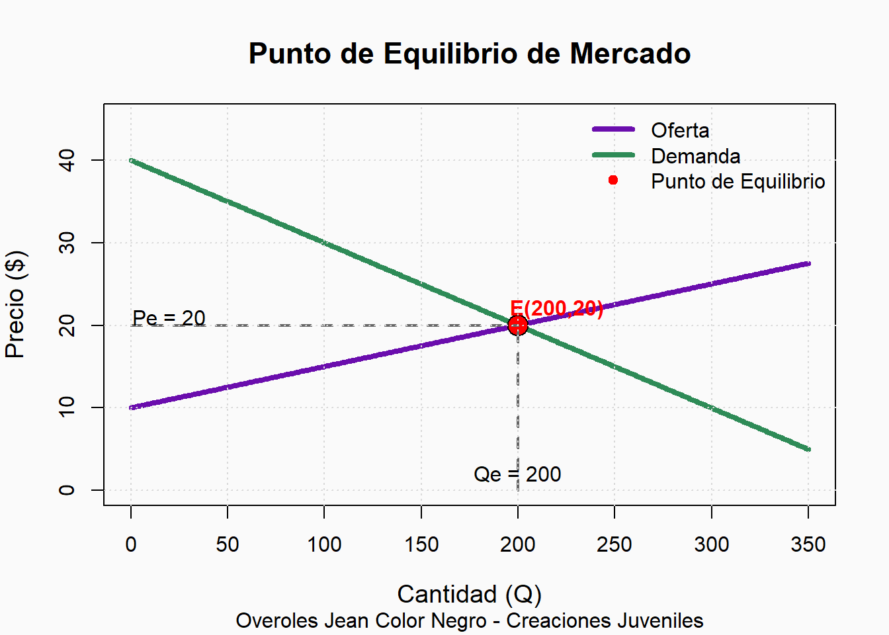
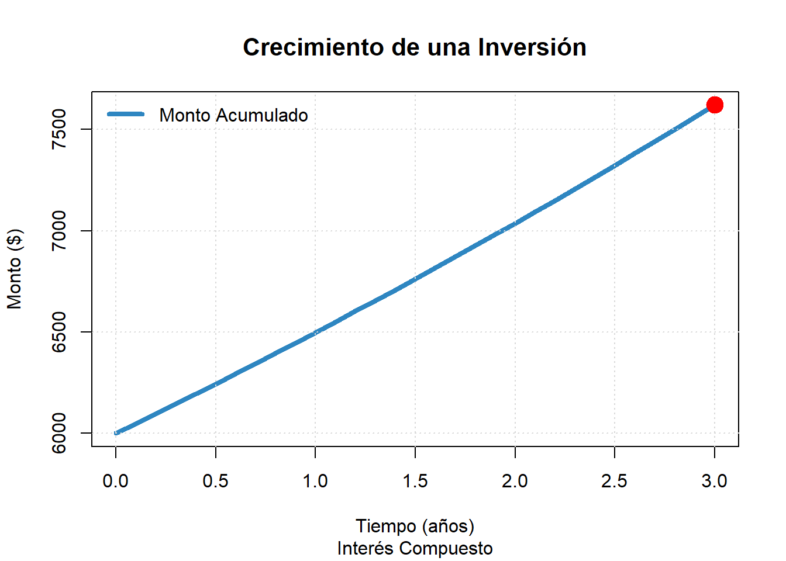

# Función de oferta
oferta <- function(q){
0.05*q + 10
}
# Función de demanda
demanda <- function(q){
-0.10*q + 40
}EJERCICIOS DE APLICACION EMPRESA CREACIONES JUVENILES
EJERCICIOS DE APLICACION
Punto de Equilibrio
La empresa Creaciones Juveniles comercializa pantalones tácticos. Con el fin de analizar el comportamiento del mercado, se determinaron las siguientes funciones de oferta y demanda:
Oferta
\[P=0,04q+12\]
Demanda
\[P=-0,06q+32\]
donde:
- P = precio por unidad (dólares).
- Q = cantidad de overoles.
Para encontrar el punto de equilibrio se empleará el método de sustitución, ya que ambas ecuaciones están despejadas en función del precio (P).
El equilibrio ocurre cuando:
\[Oferta=Demanda\]
Definir las funciones
Se definen las funciones que representan el comportamiento de la oferta y la demanda de los overoles jean color negro.
Calcular la Cantidad de Equilibrio
Igualamos ambas ecuaciones:
\[0,05q+10=-0,10q$+40\]
Qe <- (40 - 10)/(0.05 + 0.10)
Qe[1] 200La cantidad de equilibrio es de 200 overoles, ya que en este punto la cantidad ofrecida es igual a la cantidad demandada.
Calcular el Precio de Equilibrio
Sustituimos la cantidad obtenida en la ecuación de oferta:
Pe <- oferta(Qe)
Pe[1] 20El precio de equilibrio es de $20 por unidad.
Verificación
Comprobamos el resultado utilizando la ecuación de demanda.
demanda(Qe)[1] 20Ambas ecuaciones producen el mismo precio, por lo que el punto de equilibrio es correcto.
Tabla de Valores
q <- c(0, 50, 100, 150, 200, 250, 300)
tabla <- data.frame(
Cantidad = q,
Oferta = oferta(q),
Demanda = demanda(q)
)
tabla Cantidad Oferta Demanda
1 0 10.0 40
2 50 12.5 35
3 100 15.0 30
4 150 17.5 25
5 200 20.0 20
6 250 22.5 15
7 300 25.0 10La tabla permite observar que la oferta aumenta conforme incrementa la cantidad, mientras que la demanda disminuye. Ambas funciones se igualan en el punto de equilibrio.
Gráfica del Punto de Equilibrio
# Función de oferta
oferta <- function(q){
0.05*q + 10
}
# Función de demanda
demanda <- function(q){
-0.10*q + 40
}
# Punto de equilibrio
Qe <- 200
Pe <- 20
# Valores para la gráfica
q <- seq(0, 350, 1)
# Configuración visual
par(bg = "#FAFAFA")
# Gráfico de oferta
plot(q, oferta(q),
type = "l",
lwd = 4,
col = "#6A0DAD",
ylim = c(0, 45),
xlim = c(0, 350),
main = "Punto de Equilibrio de Mercado",
sub = "Overoles Jean Color Negro - Creaciones Juveniles",
xlab = "Cantidad (Q)",
ylab = "Precio ($)",
cex.main = 1.4,
cex.lab = 1.2)
# Curva de demanda
lines(q, demanda(q),
lwd = 4,
col = "#2E8B57")
# Punto de equilibrio
points(Qe, Pe,
pch = 21,
bg = "red",
col = "black",
cex = 2.2)
# Etiqueta del equilibrio
text(Qe + 20, Pe + 2,
labels = paste("E(", Qe, ",", Pe, ")", sep = ""),
col = "red",
font = 2)
# Líneas auxiliares
segments(Qe, 0, Qe, Pe,
lty = 2,
col = "gray40",
lwd = 2)
segments(0, Pe, Qe, Pe,
lty = 2,
col = "gray40",
lwd = 2)
# Cuadrícula
grid(nx = NULL,
ny = NULL,
col = "gray85",
lty = "dotted")
# Leyenda elegante
legend("topright",
legend = c("Oferta",
"Demanda",
"Punto de Equilibrio"),
col = c("#6A0DAD",
"#2E8B57",
"red"),
lwd = c(4,4,NA),
pch = c(NA,NA,21),
pt.bg = c(NA,NA,"red"),
bty = "n",
cex = 1)
# Mostrar coordenadas
text(Qe, 2,
paste("Qe =", Qe),
col = "black")
text(20, Pe + 1,
paste("Pe =", Pe),
col = "black")
La curva de oferta presenta una pendiente positiva, lo que indica que los productores están dispuestos a ofrecer más unidades cuando el precio aumenta. La curva de demanda presenta una pendiente negativa, reflejando que los consumidores demandan menos unidades cuando el precio es más alto.
El punto rojo corresponde al punto de equilibrio E(200,20), donde la cantidad ofertada es igual a la cantidad demandada. En ese punto el mercado alcanza el equilibrio, sin excedentes ni escasez.
Análisis
Al aplicar el método de sustitución se obtuvo una cantidad de equilibrio de 200 unidades y un precio de equilibrio de $20. En este punto, la cantidad que los productores están dispuestos a ofrecer coincide exactamente con la cantidad que los consumidores desean adquirir.
La gráfica muestra claramente la intersección entre las curvas de oferta y demanda, evidenciando el equilibrio del mercado. Por debajo de este precio existe una mayor demanda que oferta, mientras que por encima de este precio existe una mayor oferta que demanda.
Conclusión
Mediante el método de sustitución se determinó que el punto de equilibrio para los overoles jean color negro se alcanza cuando:
\[Q=200\]
\[P=$20\]
Por lo tanto, el mercado se encuentra en equilibrio cuando se comercializan 200 unidades a un precio de $20 por overol, ya que en ese punto la cantidad ofertada es igual a la cantidad demandada.
Interés Compuesto
La empresa Creaciones Juveniles invierte $6.000 en una institución financiera que ofrece una tasa de interés anual del 8% capitalizable mensualmente.
Determine el monto acumulado al cabo de 3 años y el interés generado por la inversión. Además, elabore una tabla de valores y una gráfica del crecimiento de la inversión.
Datos
C <- 6000 # Capital inicial
i <- 0.08 # Tasa anual
m <- 12 # Capitalización mensual
t <- 3 # Tiempo en añosSe registran los datos del problema: capital inicial, tasa de interés, número de capitalizaciones por año y tiempo de inversión.
Calcular el número de períodos
n <- m*t
n[1] 36Durante los 3 años se realizarán 36 períodos de capitalización.
Calcular el monto acumulado
M <- C*(1+i/m)^n
M[1] 7621.422El monto acumulado después de 3 años es aproximadamente $7.620,76.
Calcular el interés ganado
I <- M - C
I[1] 1621.422La empresa obtiene una ganancia de $1.620,76 por concepto de intereses.
Tabla de valores
anio <- 0:3
monto <- C*(1+i/m)^(12*anio)
tabla <- data.frame(
Anio = anio,
Monto = round(monto,2)
)
tabla Anio Monto
1 0 6000.00
2 1 6498.00
3 2 7037.33
4 3 7621.42La tabla muestra cómo crece la inversión a medida que transcurren los años.
Gráfica
# Datos para la gráfica
anio <- seq(0,3,0.1)
monto <- C*(1+i/m)^(12*anio)
# Gráfica
plot(anio,monto,
type="l",
lwd=4,
col="#2E86C1",
main="Crecimiento de una Inversión",
sub="Interés Compuesto",
xlab="Tiempo (años)",
ylab="Monto ($)",
cex.main=1.3)
grid(col="gray85",
lty="dotted")
# Punto final
points(3,max(monto),
pch=19,
cex=2,
col="red")
text(3,max(monto)+120,
labels=paste("M = $",round(max(monto),2)),
col="red")
legend("topleft",
legend="Monto Acumulado",
col="#2E86C1",
lwd=4,
bty="n")
La gráfica presenta una curva creciente, lo que demuestra que la inversión aumenta con el tiempo debido a la capitalización de los intereses.
Análisis
La inversión inicial de $6.000 crece mediante interés compuesto a una tasa anual del 8% con capitalización mensual. Después de 3 años, el capital alcanza un valor aproximado de $7.620,76, generando intereses por $1.620,76. La gráfica evidencia un crecimiento exponencial, ya que los intereses generados se suman al capital y producen nuevos intereses.
References
Creaciones Juveniles. 2026. Sitio Web Oficial de Creaciones Juveniles. https://creacionesjuveniles.com/.